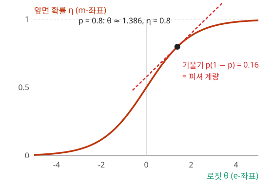

출발 문제에서 정규분포 두 개의 가운데를 구할 때, 다이얼 한 벌을 골라 숫자를 평균 내기만 했다. 평균이 곧은 길의 가운데가 되려면 그 다이얼 위에서 곧은 길이 정말 직선으로 보여야 한다. α=±1, 곧 e-접속과 m-접속은 그런 다이얼을 가진다는 점에서 특별하다. 두 접속으로 각각 공간을 보면 어떤 모양일까? 한쪽이 곧으면 다른 쪽은 휘어 있어야 할까?
동전 하나로 먼저 보자. 앞면이면 x=1, 뒷면이면 x=0으로 적으면 동전의 확률은 exp(θx−ψ(θ)) 꼴로 쓸 수 있다. θ=log1−pp는 로지스틱 회귀가 내놓는 로짓이고 ψ(θ)=log(1+eθ)다. ML에서는 로짓을 흔히 z로 쓰지만, 여기서는 지수족의 다이얼이라는 뜻을 살려 θ로 쓴다. 글자만 바꾼 것이다. 다이얼(매개변수)은 로짓 θ와 앞면 확률 η=p=E[x], 두 벌이다. θ 다이얼 위에서 곧게 가는 길이 e-측지선, η 다이얼 위에서 곧게 가는 길이 m-측지선이다. 두 다이얼 사이의 번역표(한 다이얼을 조금 돌리면 다른 다이얼이 얼마나 돌아가는가) dη/dθ는 시그모이드의 미분 p(1−p)인데, 이것이 바로 동전의 피셔 계량이다. p=0.8이면 0.16이다.

동전의 두 다이얼. 가로축 로짓 θ(e-좌표)를 돌리면 세로축 앞면 확률 η(m-좌표)가 시그모이드를 따라 움직인다. 앞면 확률 0.8인 점에서 곡선의 기울기 p(1−p)=0.16이 동전의 피셔 계량이다
두 다이얼로 옮긴 두 화살표
두 다이얼이 정말 쌍대 짝을 이루는지 숫자로 확인해 보자. 앞면 확률 0.8인 동전에서 화살표 둘을 출발시킨다. 화살표 Y는 θ 다이얼로 잰 성분을 1로 두고, θ 다이얼 위에서 곧게(성분을 그대로 둔 채) 옮긴다. 화살표 Z는 η 다이얼로 잰 성분을 1로 두고, η 다이얼 위에서 곧게 옮긴다. 피셔 계량으로 재면 θ 성분이 a인 화살표의 길이는 ap(1−p)다. Z의 θ 성분은 η 성분 1을 번역표 p(1−p)로 나눈 1/(p(1−p))이다.
앞면 확률 p
피셔 계량 p(1−p)
Y의 길이
Z의 길이
내적 p(1−p)×1×p(1−p)1
0.8
0.16
0.4
2.5
1
0.5
0.25
0.5
2.0
1
두 화살표 모두 길이가 변한다. 그런데 한쪽이 늘 때 다른 쪽이 정확히 그만큼 줄어 내적은 1 그대로다. 앞면 확률 0.5에서는 길이가 0.5와 2로, 쌍대 접속을 처음 소개할 때 본 직선 위 화살표 짝과 같은 수다. θ 다이얼 위에서 곧은 접속(e)과 η 다이얼 위에서 곧은 접속(m)은 서로의 쌍대다.
측지선이 모두 직선으로 보이는 다이얼이 있는 접속은 평탄(곡률, 곧 휘어진 정도가 0)하다. 지수족 위에서는 e-접속 ∇(1)과 m-접속 ∇(−1)이 모두 평탄하지만, 두 접속의 "곧음"은 서로 다르다. 이 상태를 **쌍대 평탄(dually flat)**이라 부른다. 지수족 p(x;θ)=exp(θixi−ψ(θ))에서는 동전에서처럼 두 곧은 좌표와 계량이 하나의 볼록 함수 ψ에서 나온다.
앞면 확률이 0.8인 동전이면 η=0.8, θ=log4≈1.386, ψ=log5≈1.609이므로 φ=θη−ψ≈1.109−1.609=−0.500이다. 이 동전의 엔트로피는 −(0.8log0.8+0.2log0.2)≈0.500이니, φ는 정말 음의 엔트로피다. 이렇게 ψ에서 φ를 만드는 변환을 르장드르 변환(볼록 함수를 ‘기울기 → 절편’ 표로 다시 쓰는 변환)이라 부른다. 계량은 퍼텐셜을 두 번 미분한 값(헤세 행렬)이고, 두 좌표는 르장드르 변환으로 오간다. 이것이 쌍대 평탄 구조의 전부다.
쌍대 평탄 (양쪽 다 곧은 / Dually Flat) — ∇와 ∇∗가 모두 곡률 0인 경우. 각 접속의 측지선이 모두 직선으로 보이는 좌표(아핀 좌표)가 하나씩 있고, 둘은 르장드르 변환으로 오간다. 지수족에서는 자연 매개변수 θ(e)와 기대 매개변수 η(m)가 그 두 좌표다. 통계역학에서 분배함수의 로그와 엔트로피가 르장드르 변환으로 오가는 것과 같은 구조다.
따라 계산해 보기 — 정규분포의 두 좌표와 두 중간점
평균 μ, 표준편차 σ인 정규분포 N(μ,σ2)의 밀도는 exp(σ2μx−2σ21x2−ψ) 꼴이므로 분포를 정하는 데 데이터에서 필요한 요약값(충분통계량)은 (x,x2)이고, 두 좌표는 다음과 같다.
예를 들어 N(1,4)는 θ=(1/4,−1/8), η=(1,5)이다. 로그 분배함수 ψ(θ)=−4θ2(θ1)2−21log(−2θ2)+21log2π를 미분하면 ∂ψ/∂θ1=μ, ∂ψ/∂θ2=μ2+σ2로 정말 η가 나온다.
이제 P=N(−2,1)과 Q=N(2,1) 사이의 두 측지선에서 한가운데 점을 찾아보자. e-측지선은 θ에서 직선이므로 θ를 평균 내면 된다. θP=(−2,−1/2), θQ=(2,−1/2)의 평균은 (0,−1/2)이고, 이것은 N(0,1)이다. m-측지선은 η에서 직선이다. ηP=(−2,5), ηQ=(2,5)의 평균은 (0,5)이고, 평균 0에 E[x2]=5이므로 N(0,5)이다.
같은 두 분포 사이의 "한가운데"가 접속에 따라 전혀 다르다. e-중간점 N(0,1)은 두 분포를 곱해 겹치는 부분만 남긴 좁은 분포이고, m-중간점 N(0,5)는 두 분포를 반반 섞은 혼합분포와 평균·분산이 같은 넓은 분포다.
아래 그림은 정규분포족을 평균 μ와 표준편차 σ의 평면으로 펼친 것이다. 따라 계산해 보기의 두 분포를 잇는 e-측지선과 m-측지선, 그리고 피셔 계량의 레비-치비타 측지선을 함께 그린다. 비율 t를 움직이면 세 측지선 위의 점이 나타내는 분포의 모양이 아래 그래프에 그려진다.
문제 6 — 두 차의 평균 연비
확인 연비가 10 km/L인 차와 20 km/L인 차가 각각 100 km씩 달렸다. 두 차를 합친 연비(달린 거리 ÷ 쓴 기름)는 몇 km/L인가? 이 값은 km/L로 평균 낸 값과, 100 km에 드는 기름(L/100km)으로 평균 낸 값 가운데 어느 쪽과 같은가? 두 차가 기름을 10 L씩 썼다면 어떤가?
무엇을 똑같이 맞췄느냐요. 거리를 같게 두면 기름이 더해지니까 거리당 기름을 평균 내야 하고, 기름을 같게 두면 거리가 더해지니까 기름당 거리를 평균 내야 해요. 실제로 더해지는 양을 다이얼로 삼아야 그 다이얼의 평균이 맞는 가운데가 돼요.
김민준
팀플 기여도를 「시간당 쓴 코드 줄 수」로 평균 냈다가, 조교님이 「다들 같은 시간 일한 거 맞아요?」 하셨던 게 이거였네요.
문제 7 — 분산이 다른 두 분포의 중간
계산P=N(0,1)과 Q=N(0,9)를 잇는 e-측지선과 m-측지선의 한가운데 점은 각각 어떤 정규분포인가? 두 분포를 반반 섞은 혼합분포 21P+21Q와는 어떤 관계인가? 풀고 나서 위 도구의 「문제 7 불러오기」로 두 분포를 넣고 t=0.5에서 자기 답과 견주어 보라.
같이 풀기 세션 7
김민준
표준편차가 1이랑 3이니까 가운데는 2죠. N(0,4)요. 둘 다 그거 아니에요?
선생님
표준편차 σ를 평균 낸 건 어느 좌표에서의 직선이죠?
김민준
아… θ도 η도 아니고 그냥 (μ,σ) 좌표네요. 그건 이 장에서 나온 어느 접속의 직선도 아니고요. 다시 할게요. e-좌표는 θ2=−1/(2σ2)이니까 −1/2와 −1/18의 평균이 −5/18, 그러면 σ2=9/5=1.8이에요.
김민준
아까 연비 문제랑 같네요. 편한 다이얼에서 평균을 내면 안 되고, 어느 다이얼에서 평균 내느냐가 먼저였어요.
이서연
m 쪽은 혼합분포부터 생각했어. 21P+21Q는 가운데가 뾰족하고 꼬리가 두꺼워서 정규분포가 아니잖아. 그러면 m-측지선의 중간점이 정규분포족 밖으로 나가 버리는 거 아냐?
선생님
좋은 관찰이에요. 그 혼합분포의 평균과 E[x2]는 얼마예요?
이서연
평균은 0이고 E[x2]=21(1)+21(9)=5야. 그런데 η 좌표로 P와 Q를 평균 내도 (0,5)가 나오니까, 족 안의 m-중간점은 N(0,5)이고 혼합분포와 평균·분산이 똑같네. 족 밖으로 나간 혼합분포를, 모멘트를 맞춰서 족 안으로 데려온 점이 m-중간점이야.
선생님
그 "모멘트를 맞춰 데려오기"에는 m-사영이라는 이름이 따로 있어요. 정리하면 e-중간점은 분산의 조화평균 1.8, m-중간점은 산술평균 5예요.
이서연
통계 수업에서 가우시안 혼합을 정규분포 하나로 근사할 때 평균과 분산을 맞추라고만 배웠는데, 그게 m-좌표에서 직선을 긋는 일이었구나.
문제 8 — 앙상블의 예측을 정규분포 하나로
계산 회귀 모델 두 개를 따로 학습시켜 같은 입력에 대한 예측을 정규분포로 받았다. 모델 1은 N(−1,1), 모델 2는 N(1,4)다(괄호 안은 평균과 분산). 락시미나라야난(B. Lakshminarayanan) 등의 2017년 논문 “Simple and Scalable Predictive Uncertainty Estimation using Deep Ensembles”(딥 앙상블)은 여러 모델의 예측을 반반 섞은 혼합분포로 보고, 그 혼합분포와 평균·분산이 같은 정규분포 하나로 앙상블의 예측을 적는다. (가) 그 정규분포를 구하라. (나) 그것은 θ 다이얼과 η 다이얼 가운데 어느 쪽에서 평균 낸 것인가? 다른 쪽 다이얼에서 평균 내면 어떤 분포가 나오는가? 위 도구의 「문제 8 불러오기」로 확인할 수 있다.
같이 풀기 세션 8
김민준
평균은 −1과 1의 평균 0, 분산은 1과 4의 평균 2.5요. N(0,2.5)예요.
선생님
두 모델은 평균을 −1과 1로, 2만큼 다르게 말했어요. 그 의견 차이는 2.5 안 어디에 들어 있죠?
김민준
안 들어 있네요… 두 모델이 똑같이 0을 말했어도 2.5가 나왔을 거예요. 문제 7처럼 E[x2]를 평균 내야겠어요. 모델 1은 1+1=2, 모델 2는 4+1=5, 평균 3.5. 평균이 0이니 분산도 3.5, N(0,3.5)예요. η 다이얼의 평균이니 m-측지선의 가운데고요.
이서연
3.5=2.5+1이네. 2.5는 각 모델이 스스로 모르겠다고 한 몫이고, 1은 두 평균 −1, 1이 갈린 몫이야. 둘 다 평균 0에서 1씩 떨어졌으니까 제곱의 평균이 1.
선생님
θ 다이얼에서 평균 내면 어떻게 되는지도 볼까요?
이서연
둘째 성분 −1/(2σ2)는 −1/2과 −1/8, 평균 −5/16이니 분산 1.6. 첫째 성분 μ/σ2는 −1과 1/4, 평균 −3/8이니 평균은 −3/8×1.6=−0.6. N(−0.6,1.6)이야. 분산이 2.5보다도 작고, 더 자신 있게 말한 모델 1 쪽으로 끌려갔어.
선생님
곱하는 길의 가운데는 두 예측이 겹치는 데로 좁혀 가요. 앙상블이 알고 싶은 건 모델들이 얼마나 엇갈리는지라서, 엇갈림이 분산에 남는 섞는 길을 써요.
김민준
발표 평가에서 조교님 두 분이 각자 「애매하다」고 적은 정도만 평균 내고, 두 분 점수가 크게 갈린 건 빼먹은 거랑 같았어요. 갈린 것 자체가 「잘 모르겠다」는 정보였는데요.